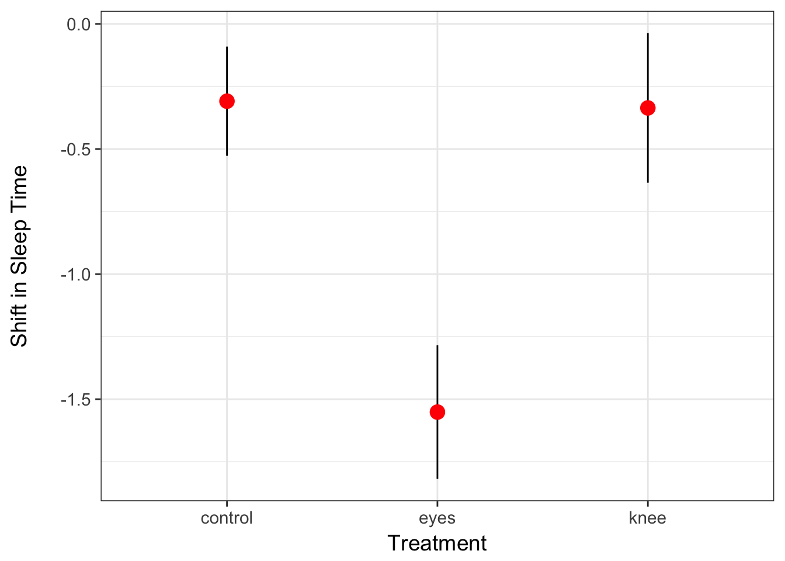
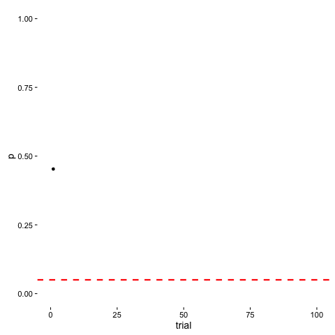
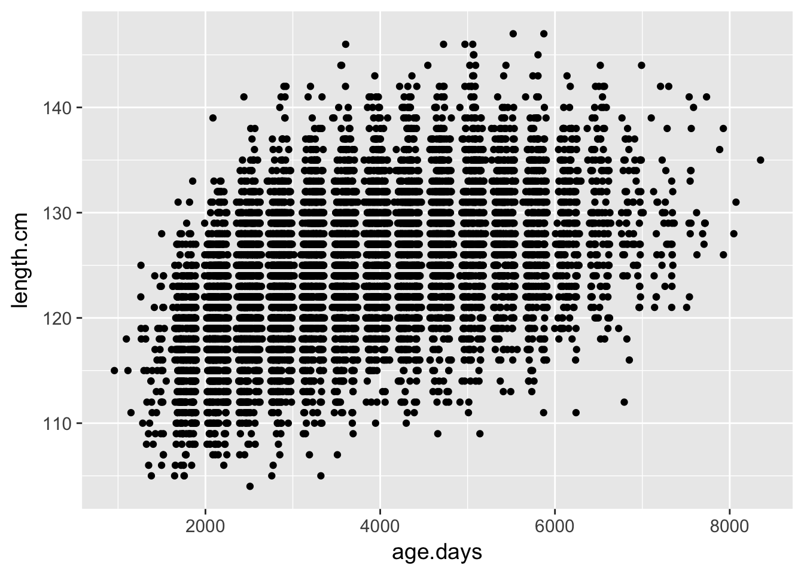
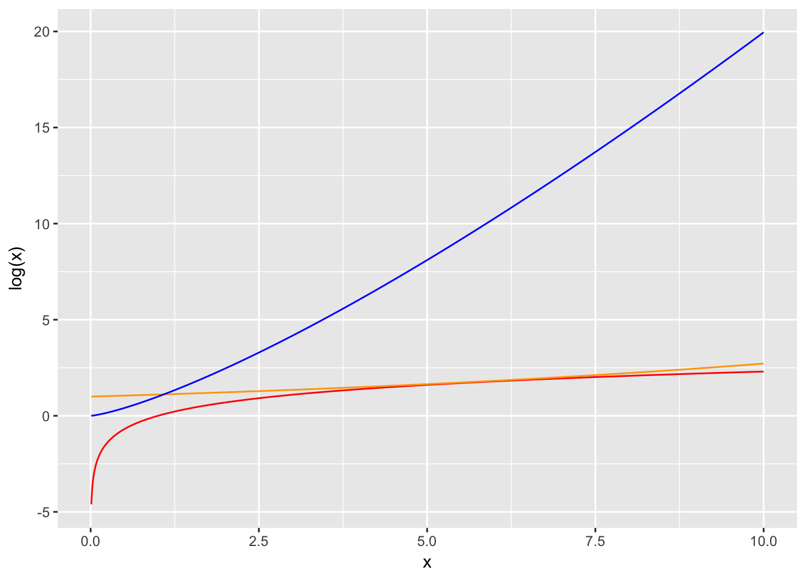
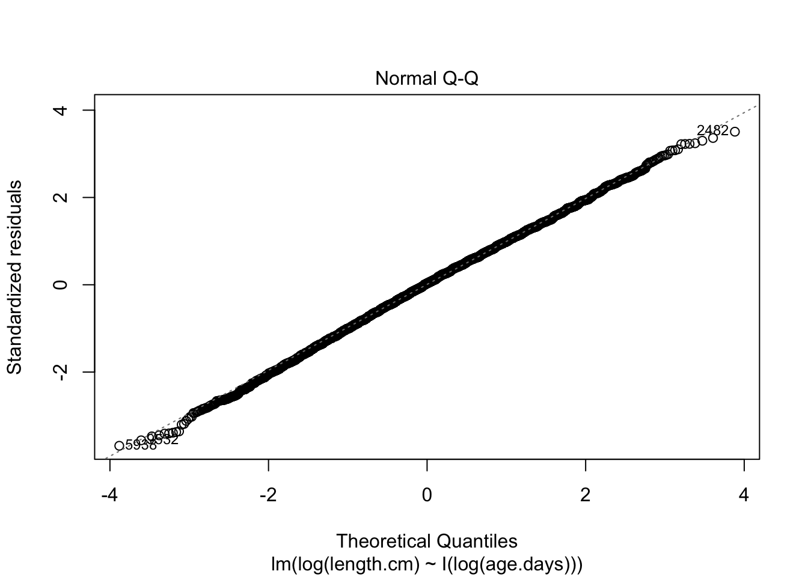

Diving into the Linear Model

Deeper into the World of Linear Models
Are groups different: T, F, and Multiple Comparisons
Linear Regression
Nonlinear Regression
The Knee’s The Thing!

- Test if shining light behind knees or on eyes helped jet lag
- Also a control group with no light
- n=7
Many Questions
- Are groups different from 0?
- Are groups different from each other?
- Are groups a meaningful explanatory variable?
Which of these Groups Differ: A Job for T

The Problem of Multiple Comparisons

Solutions to Multiple Comparisons?
- Ignore it - a test is a test
- Least Squares Difference test
- Lower your \(\alpha\) given m = # of comparisons
- Bonferroni \(\alpha/m\)
- False Discovery Rate \(k\alpha/m\) where k is rank of test
- Other multiple comparinson correction
- Tukey’s Honestly Significant Difference
No Correction
## contrast estimate SE df t.ratio p.value
## control - eyes 1.243 0.364 19 3.411 0.0029
## control - knee 0.027 0.364 19 0.074 0.9418
## eyes - knee -1.216 0.376 19 -3.231 0.0044
Bonferroni Corrections
p = min(1, p*m)
m = # of comparisons
## contrast estimate SE df t.ratio p.value
## control - eyes 1.243 0.364 19 3.411 0.0088
## control - knee 0.027 0.364 19 0.074 1.0000
## eyes - knee -1.216 0.376 19 -3.231 0.0132
##
## P value adjustment: bonferroni method for 3 tests
FDR
p = min(1, m/k * p)
m = # of comparisons
k = rank of comparison
## contrast estimate SE df t.ratio p.value
## control - eyes 1.243 0.364 19 3.411 0.0066
## control - knee 0.027 0.364 19 0.074 0.9418
## eyes - knee -1.216 0.376 19 -3.231 0.0066
##
## P value adjustment: fdr method for 3 tests
Tukey Test
p drawn from studentized range distribution based on miminum and maximum mean
Test statistic: q = \((\mu_a - \mu_b)/SE\) where \(\mu_a\) is larger
## contrast estimate SE df t.ratio p.value
## control - eyes 1.243 0.364 19 3.411 0.0079
## control - knee 0.027 0.364 19 0.074 0.9970
## eyes - knee -1.216 0.376 19 -3.231 0.0117
##
## P value adjustment: tukey method for comparing a family of 3 estimates
Visualizing Comparisons

Deeper into the World of Linear Models
- Are groups different: T, F, and Multiple Comparisons
- Linear Regression
- Nonlinear Regression
Are Older Seals Bigger?

Are Older Seals Bigger?

We could just look at correlation
- The porportion change in standard deviations of variable x per change in 1 SD of variable y
- Clear, right?
- And that’s just for normal, linear variables
- Assesses the degree of association between two variables
- But, unitless (sort of)
Calculating Correlation: Start with Covariance
Describes the relationship between two variables. Not scaled.
\(\sigma_{xy}\) = population level covariance
\(s_{xy}\) = covariance in your sample
\[\sigma_{XY} = \frac{\sum (X-\bar{X})(y-\bar{Y})}{n-1}\]
Pearson Correlation
Describes the relationship between two variables.
Scaled between -1 and 1.
\(\rho_{xy}\) = population level correlation, \(r_{xy}\) = correlation in your sample
\[\Large\rho_{xy} = \frac{\sigma_{xy}}{\sigma_{x}\sigma_{y}}\]
Seals and correlation
## [1] 0.4750255
The Steps of Statistical Modeling
- What is your question?
- What model of the world matches your question?
- Build a test
- Evaluate test assumptions
- Evaluate test results
- Visualize
Our Question and Model
Question 1: Are older seals bigger?
Question 2: How much do seals grow per day?
\[Length_i = \beta_0 + \beta_{1}Age_i + \epsilon_i\]
More Linear Models
\[Length_i = \beta_0 + \beta_{1}Age_i + \epsilon_i\]
Was this Linear? Fitted Versus Residuals

Testing our Error Generating Process

QQs Everywhere

Is Our Model Any Good? F-that!
| age.days |
1 |
90861.81 |
90861.80648 |
2815.841 |
0 |
| Residuals |
9663 |
311806.52 |
32.26809 |
NA |
NA |
T for Coefficients
| (Intercept) |
115.7667505 |
0.1763751 |
656.3668 |
0 |
| age.days |
0.0023706 |
0.0000447 |
53.0645 |
0 |
How Much Variation does our Model Explain?
\[1-Var_{residual}/Var_{total}\]
\(R^2\) = 0.2256493
Deeper into the World of Linear Models
- Are groups different: T, F, and Multiple Comparisons
- Linear Regression
- Nonlinear Regression
Residuals v. Fitted Fishy…

A Different Data Generating Process?

Possible Nonlinear Data Generating Processes

What Shape is the Data Generating Process?

A New Model
\[y_i = exp^{\beta_0 + \beta_{1}log(x_i) + \epsilon}\]
\[log(y_i) = \beta_0 + \beta_{1}log(x_i) + \epsilon\]
Did it Fix the Residuals Problem?

Still Must Evaluate Error Generating Process

How Much Variation does our Model Explain?
\[1-Var_{residual}/Var_{total}\]
\(R^2\) = 0.2500709